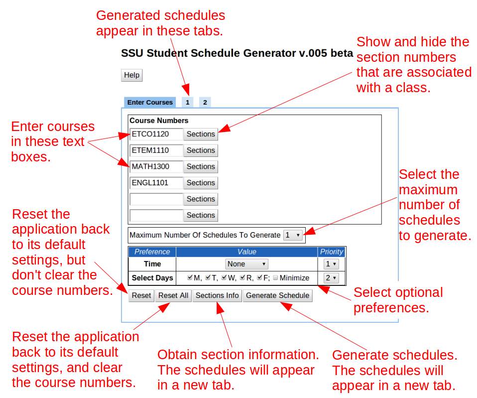

The purpose of the student schedule generator is to automatically create student schedules. It is a web application that can be accessed with any modern web browser. The current version of the application is configured to use the fall semester 2012 course schedule.
The following screenshot of the application contains labeled arrows that explain the various parts of its user interface:

The application is tab based, and the leftmost tab (which is labeled "Enter Courses") contains the main user interface. These are the steps that are followed in order to generate one or more schedules:
Enter one or more course numbers into the text boxes that are in the "Course Numbers" section.
The default maximum number of schedules to generate is one. The maximum number of schedules to generate can be increased in the "Maximum Number of Schedules" section.
By default, no preferences are selected. A morning, afternoon, or evening preference can be selected in the "Preferences" section if desired.
Press the "Generate Schedule" button to generate the number of selected schedules. The schedules are placed into a new tab.
The "Sections" button will show and hide the numbers of the sections that are being offered for a class. Each section number has a check box that can be used to disable or enable its inclusion in the schedule that is being generated.
The "Reset" button will reset the application, but it will not clear the course numbers. The "Reset All" button will reset the application, and it will clear the course numbers.
The following screenshot shows a generated schedule that was placed into tab #1.